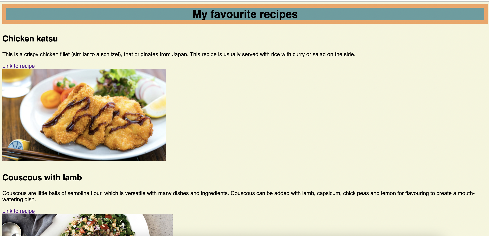

Favourite recipes
Here is a screenshot of a list of favourite recipes. I initally start this in the second week of the Flextrack course at Coder Academy, utilising HTML elements like heading, and hyperlink references, and eventually getting an image as a hyperlink reference to the recipe shown. This would inspire me to use this method for this web portfolio in later weeks. Building on HTML used on the page, I applied some basic CSS skills to experiment with the page, and give it more colour.